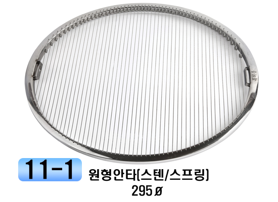
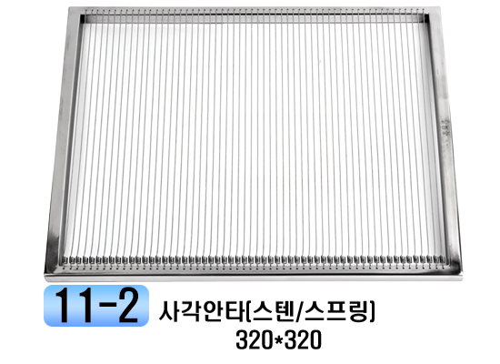
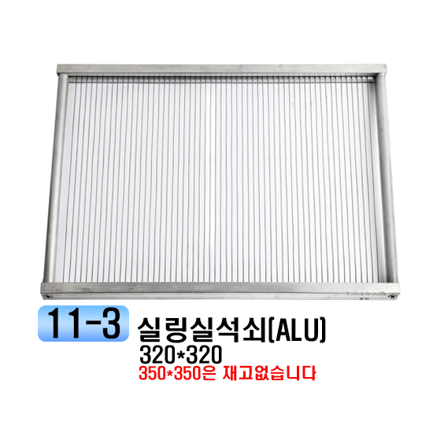
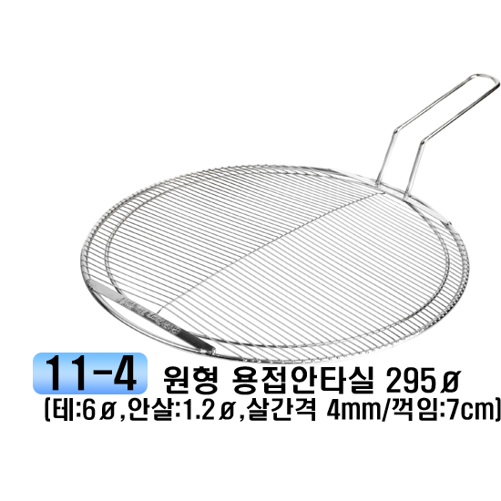
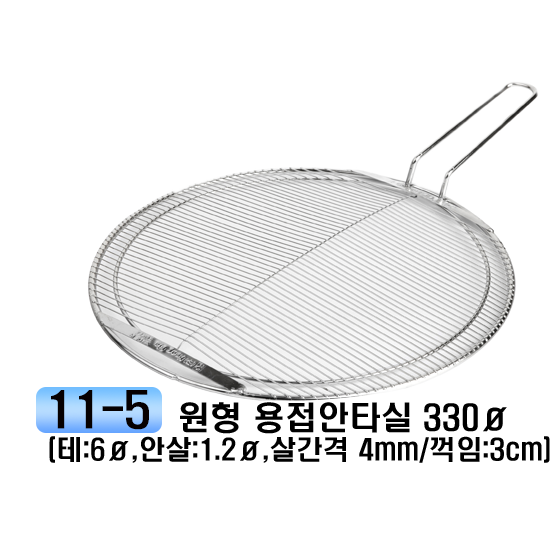
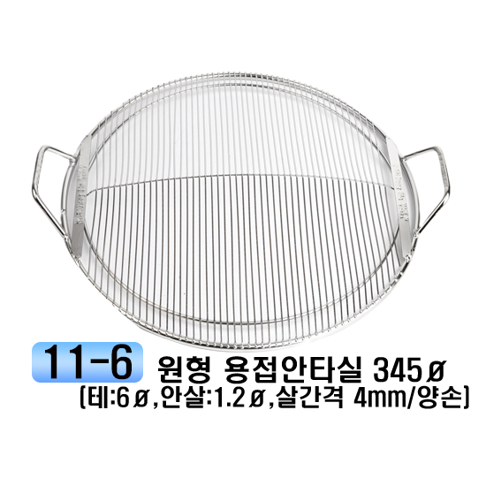
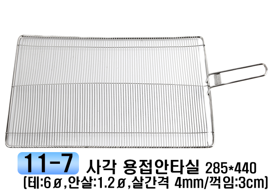
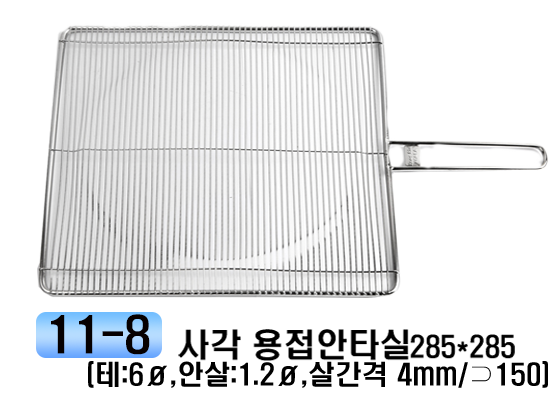

목차
모든 석쇠 맞춤 제작 가능합니다 사이즈는 1~2mm 차이 날수 있습니다
닫기
4p.원형홈석쇠
5p.원형홈석쇠(양손)
6p.원형봉(배,겹,막힘/한손)
7p.원형봉(배,겹,막힘/양손)
8p.원형봉(칼 1~3줄/한손)
9p.원형봉(칼 1~3줄/양손)
10p.봉석쇠(조개구이/양손)
11p.실석쇠/용접실석쇠
12p.사각홈석쇠(양손)
13p.사각봉석쇠(양손)
14p.사각바베큐석쇠
15p.사각석쇠
16p.사각겹봉/망석쇠
17p.사각꼼장어/망석쇠
18p.원형망석쇠(한손/양손)
19p.동망석쇠(광양동망/용접동망)
20p.동석쇠/동판/삼중판/삼중불고기
21p.코팅불판석쇠(세라믹/나뭇잎)
22p.밧트망바구니 1호~3호
23p.밧트망바구니 4~5호
24p.원형스텐망바구니 1~9호
25p.원형스텐망바구니 10~25인치용
26p.바구니/접시꽂이/스낵스텐드
27p.미니바구니(원형/사각)
28p.후라이바스켓/튀김망
29p.튀김망/빵판
30p.씨펜망(봉)/밧트망(봉)
31p.화덕로스타
32p.불안나로스타
33p.착화식로스타
34.막로스타/장어로스타
35p.백정로스타(화로/계란받이외)
36p.숯통(막로스타/불안나/바가지숯통)
37p.불안나화로(항아리/조개구이/오리로스타)
38p.물받이/테이블링
39p.테이블링/사발이/수정불판받침
40p.원형보관함
41p.숯통운반통/사각불림통
42p.착화기(숯대감/숯땡큐)
43p.컵디스펜서(컵홀더)/집게
44p.사각불안나콜(사각야외용바베큐)
45p.사각불안나콜 사용법
46p.사각야외용그릴
47p.원형야외용그릴
섹션
표

원형안타330파이
원형안타345파이

사각안타350*350





용접안타340*490

용접안타320*320
화살표왼쪽
화살표오른쪽